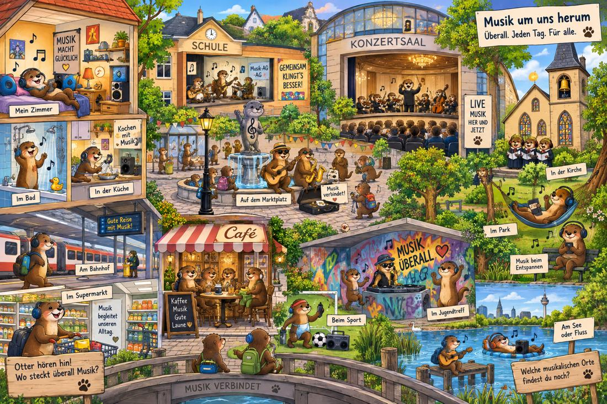

Wo begegnet dir Musik in deinem Alltag?
Finde im Otter-Wimmelbild Orte, an denen Musik gehört oder gemacht wird.
Bilddatei: assets/wimmelbild-musikalische-orte.jpg

1. Schreibe mindestens fünf musikalische Orte auf.
2. Wähle später drei Orte aus.
3. Entscheide: eher privat, eher öffentlich oder nicht sicher?
Privat: Musik in einem persönlichen, nicht allgemein zugänglichen Bereich.
Öffentlich: Musik an einem Ort, an dem viele Menschen teilnehmen oder zuhören können.
Manche Orte sind nicht eindeutig. Das ist okay - dann begründe deine Entscheidung.
Fülle dein Mini-Exit-Ticket aus und gib es ab.